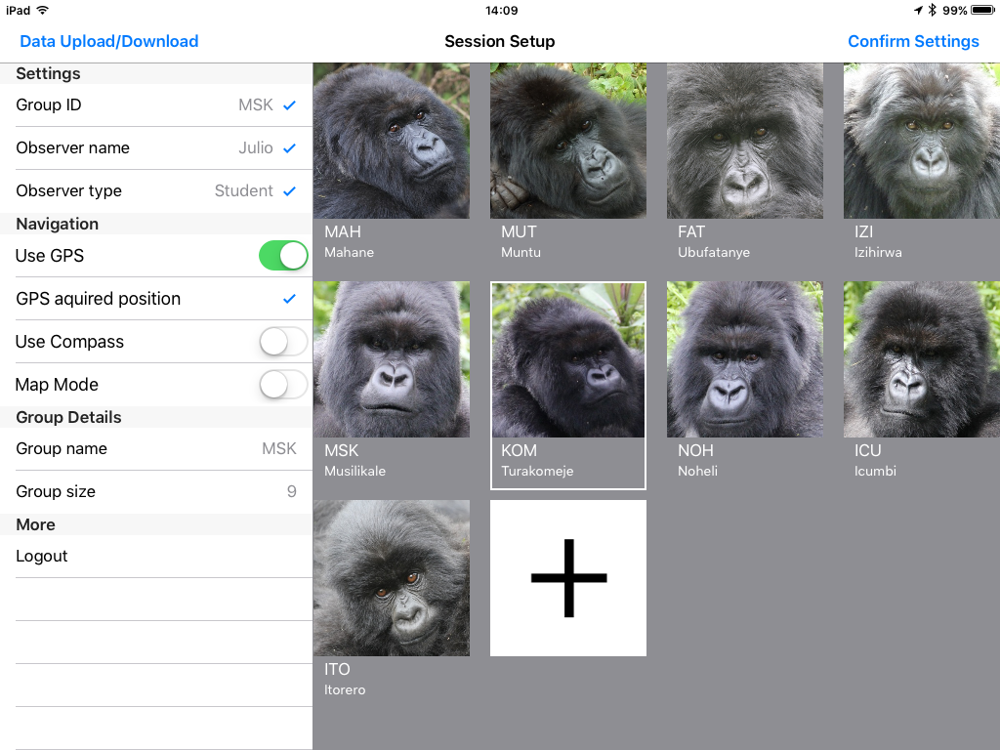

How to Customize Animal Observer
We designed a small application named Animal Observer Toolbox to allow you to generate the json files needed to customize your user interface. You will need a recent version of the software R to be able to access this application. R can be downloaded here. Make sure R is installed on every computer you will use to set up Animal Observer and to download collected data. You will also need package 'shiny' to be installed. To do so, just type install.packages('shiny') in the R console.
You will need an internet connection the first time you run the toolbox. To launch it, just type:
library(shiny)
runGitHub("FosseyFund/AOToolBox-public")
Necessary packages will then automatically be downloaded and the toolbox will start in your default internet browser. Follow the instructions in the different tabs to set up your user interface and convert the data you've collected to a set of csv files.
Once you've launched the Toolbox using the above command, you can run it even without an internet access using the following procedure:
- Download the whole repository using the links at the top of the page. Unzip or untar it if you've downloaded it in a compressed format. You should obtain a folder named 'AOToolBox-master'.
- Make sure R's working directory includes the AOToolBox folder.
- Launch it from R by typing:
library(shiny)
runApp('AOToolBox-master')
Note that although the Animal Observer Tool Box is fully functional, it is still in development. The tutorials will be improved, video demos will be included and additional features will be added. Ideas and feedback are welcome!
Thank you!